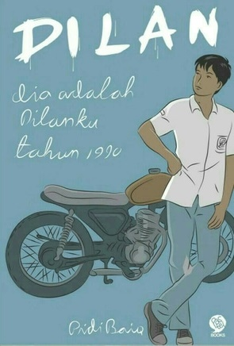

Lihat Buku Lainnya
Dilan - Dia Adalah Dilanku Tahun 1990 karya Pidi Baiq

Detail Buku: Judul: Dilan - Dia Adalah Dilanku Tahun 1990 Penulis: Pidi Baiq Penerbit: Mizan, 2015 ISBN: 978-602-7870-41-3 Jumlah halaman: 384 halaman Beli Deskripsi: "Milea, kamu cantik, tapi aku belum mencintaimu. Enggak tahu kalau sore. Tunggu aja" (Dilan 1990) "Milea, jangan pernah bilang ke aku ada yang menyakitimu, nanti, besoknya, orang itu akan hilang." (Dilan 1990) "Cinta sejati adalah kenyamanan, kepercayaan, dan dukungan. Kalau kamu tidak setuju, aku tidak peduli." (Milea 1990)